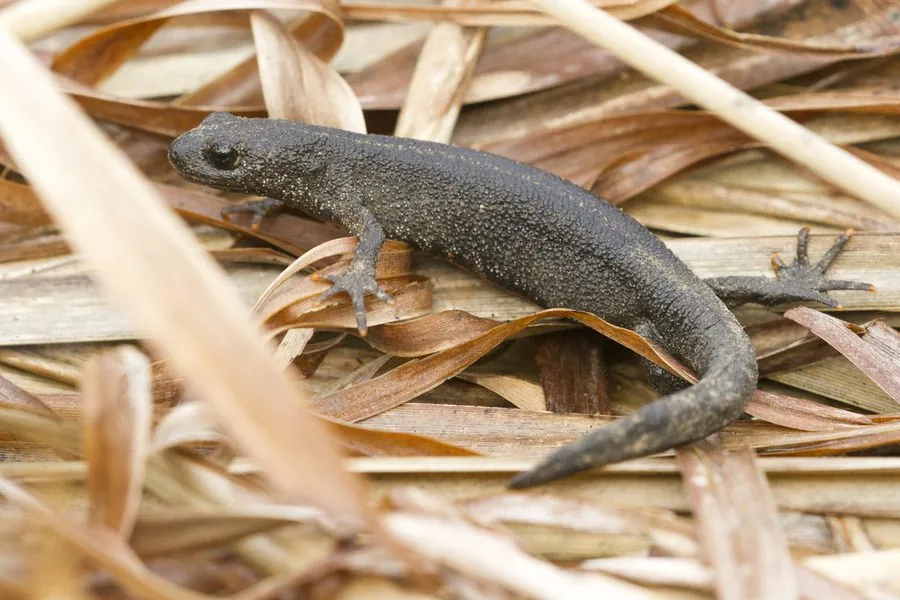

两栖动物 · 动物界
大冠蝾螈 Triturus carnifex

意大利与巴尔干半岛的蝾螈，繁殖期雄螈背脊长出一整片锯齿状高冠，体色黑褐带银点、腹面橙黄，多在静水中产卵。
- 分类
- 门脊索动物门纲两栖纲目有尾目科蝾螈科属欧螈属
- 栖息环境
- 低山丘陵的落叶林、灌丛、农田附近的静水池塘、沟渠与缓流溪
- 地理分布
- 意大利半岛、巴尔干半岛西部，北至阿尔卑斯山南麓
- 保护级别
- IUCN 无危（LC）；CITES 附录Ⅱ；欧洲多国列为受保护物种
物种志
大冠蝾螈体长 11–16 厘米，雌性略大于雄性。皮肤粗糙，背面呈深褐至灰黑色，散布银白色细点，体侧有细小的白色斑点；腹面橙黄至橙红，缀有黑色斑块。繁殖期雄螈背脊从头顶到尾部长出一整片高而呈锯齿状的肉质冠，冠上带黑白相间的纵纹，尾部也长出宽大的鳍膜，用于在水中展示求偶。
它们分布于意大利半岛与巴尔干半岛西部的低山丘陵，栖息于落叶林、灌丛与农田附近的池塘、沟渠和缓流溪水。成体在陆地生活时藏在石块、腐木与落叶下，夜间捕食昆虫、蚯蚓、蜗牛与水蚤。每年春季进入水中繁殖，雄螈围绕雌螈摆动尾部释放信息素，雌螈随后把卵单粒黏附在水草叶片上。幼虫在水中生活约三个月完成变态。由于湿地排水、水体污染与外来鱼类捕食，其局部种群下降。
形态与习性
- 体长约 11–16 cm，雌性略大
- 食性昆虫、蚯蚓、蜗牛、水蚤与小型无脊椎动物
- 繁殖春季入水产卵，卵单粒黏附于水草叶片
- 婚装雄螈背脊长出锯齿状高冠，尾部长出宽大鳍膜
- 体色背面黑褐带银白细点，腹面橙黄缀黑斑
- 寿命野外约 8–10 年，饲养下可达 15 年
- 变态幼虫在水中生活约三个月后完成变态上岸
趣味知识
- 繁殖期的雄螈背脊会耸起一整片锯齿状高冠，像戴了顶王冠。
- 它腹面是醒目的橙黄色配黑斑，遇险时会把肚子翻出来示警。
- 雌螈产卵很讲究，把每一枚卵单独卷进水草的叶子里。